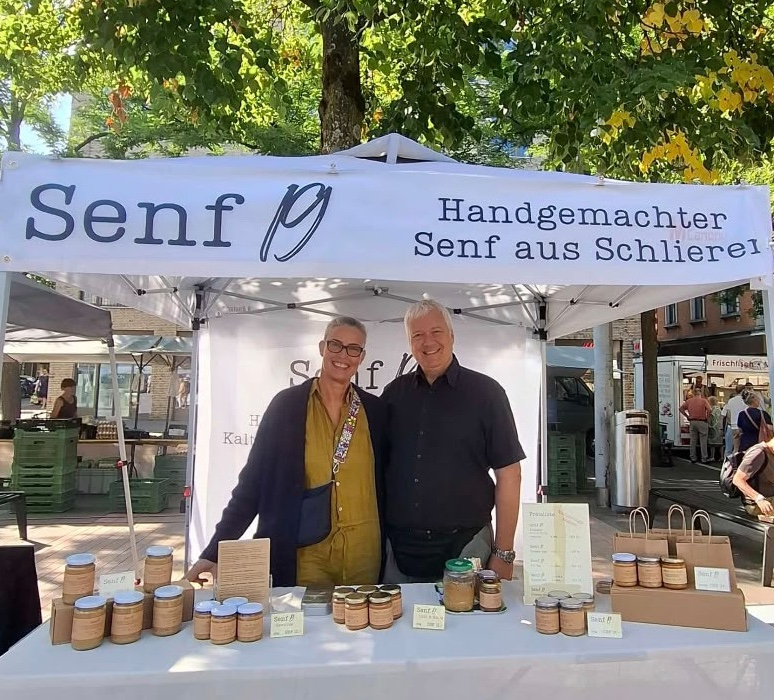

Unsere Geschichte
Zusammen mit Christian zogen auch Senfkörner und Küchenmaschinen ein. Um Vorräte zu reduzieren, entschlossen wir uns, Senf herzustellen. Aber wie?
Nach einer kurzen Suche legten wir voller Freude los und verfeinerten das Rezept unterwegs. Die Senfkörner weichten ein, entfachten ihr Aroma – die ganze Wohnung duftete nach Essig.
Dann passierte die Magie: Christian mahlte die Körner in der Steinmühle, in Anlehnung an historische Senfmühlen. Wir konnten 19 Gläser Senf füllen.
Was machen wir jetzt mit 19 Gläsern Senf?
Wir verschenkten ihn an Freunde, Familie und Kunden. Eine Kundin des Kosmetikstudios www.cosmeticum-groth.ch war so begeistert, dass wir spasseshalber ein Konzept entwickelt haben, wie wir den Senf vermarkten könnten.
Das Feedback war überwältigend: Mega! Optimal! Super!
Spontan entschieden wir: Das versuchen wir. Spass haben wir garantiert! Voller Kreativität und Freude haben wir die Sorten und den Namen kreiert.
Senf 19 ist geboren — und nun stehen wir vor Ihnen.

Wir freuen uns, wenn Sie uns Ihren Senf dazu geben. Gerne können Sie per E-Mail Senf bei uns bestellen, um die Zeit zum nächsten Markt zu überbrücken.
Jetzt per E-Mail bestellen